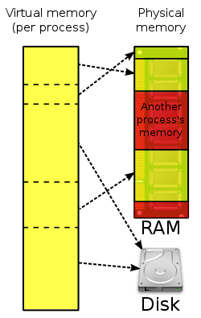
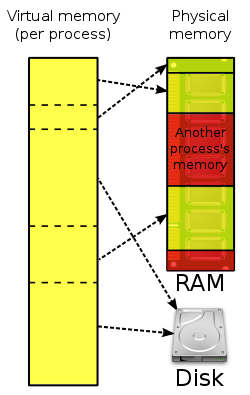

Security
Security
A computer being secure depends on a number of
technologies working properly. A modern operating system provides access to a
number of resources, which are available to software running on the system, and
to external devices like networks via the kernel.
The operating system must be capable of
distinguishing between requests which should be allowed to be processed, and
others which should not be processed. While some systems may simply distinguish
between "privileged" and "non-privileged", systems commonly have a form of
requester identity, such as a user name. To establish identity there may
be a process of authentication. Often a username must be quoted, and each
username may have a password. Other methods of authentication, such as magnetic
cards or biometric data, might be used instead. In some cases, especially
connections from the network, resources may be accessed with no authentication
at all (such as reading files over a network share). Also covered by the concept
of requester identity is authorization; the particular services
and resources accessible by the requester once logged into a system are tied to
either the requester's user account or to the variously configured groups of
users to which the requester belongs.
In addition to the allow or disallow model of
security, a system with a high level of security also offers auditing options.
These would allow tracking of requests for access to resources (such as, "who
has been reading this file?"). Internal security, or security from an already
running program is only possible if all possibly harmful requests must be
carried out through interrupts to the operating system kernel. If programs can
directly access hardware and resources, they cannot be secured.
External security involves a request from outside
the computer, such as a login at a connected console or some kind of network
connection. External requests are often passed through device drivers to the
operating system's kernel, where they can be passed onto applications, or
carried out directly. Security of operating systems has long been a concern
because of highly sensitive data held on computers, both of a commercial and
military nature. The United States
Government
Department of
Defense (DoD) created the
Trusted Computer System Evaluation
Criteria (TCSEC) which is a standard that sets basic requirements for
assessing the effectiveness of security. This became of vital importance to
operating system makers, because the TCSEC was used to evaluate, classify and
select
trusted operating systems being considered for the
processing, storage and retrieval of sensitive or
classified
information.
Network services include offerings such as file
sharing, print services, email, web sites, and
file transfer
protocols (FTP), most of which can have compromised security. At the
front line of security are hardware devices known as
firewalls
or intrusion detection/prevention systems. At the operating system level, there
are a number of software firewalls available, as well as intrusion
detection/prevention systems. Most modern operating systems include a software
firewall, which is enabled by default. A software firewall can be configured to
allow or deny network traffic to or from a service or application running on the
operating system. Therefore, one can install and be running an insecure service,
such as Telnet or FTP, and not have to be threatened by a security breach
because the firewall would deny all traffic trying to connect to the service on
that port.
An alternative strategy, and the only
sandbox strategy available in systems that do not meet the
Popek and
Goldberg virtualization requirements, is where the operating system is
not running user programs as native code, but instead either
emulates a processor or provides a host for a
p-code based system such as Java.
Internal security is especially relevant for
multi-user systems; it allows each user of the system to have private files that
the other users cannot tamper with or read. Internal security is also vital if
auditing is to be of any use, since a program can potentially bypass the
operating system, inclusive of bypassing auditing.
 
